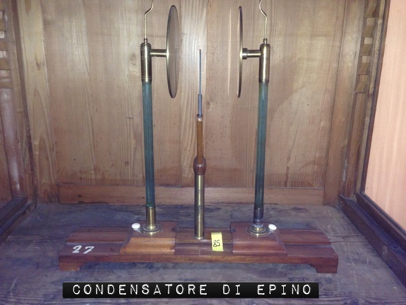

Apparecchio di Epino
Scuola di provenienza: Istituto Agrario "F. De Sanctis", Avellino
Settore: Elettrologia
Costruttori: Sconosciuto
Materiali: Legno, vetro, ottone
Accessori: Tasto ricevitore
Stato di conservazione: Buono
Descrizione: Questo apparecchio si compone di due dischi di rame,di una lamina di vetro che li separa. Questi dischi muniti di un piccolo pendolo elettrico, sono isolati sopra due colonne di vetro, e i piedi di queste possono essere mossi lungo un regolo di ottone che serve loro di sostegno in modo da allontanare o avvicinare a volontà i due dischi. Quando si vogliono accumulare le due elettricità sui dischi si mettono in contatto con la lamina di vetro; poi mediante corde metalliche, si fa comunicare uno di essi con la macchina elettrica e l’altro con il suolo. Quando il condensatore è caricato, vale a dire quando le elettricità contrarie sono accumulate sulle facce anteriori, si rompono le comunicazioni con la macchina e con il suolo,togliendo le due catene metalliche. Il disco che era collegato al suolo è caricato di elettricità negativa sulla sua faccia interna mentre su quella esterna è neutro. Al contrario, il disco che era collegato alla macchina è elettrizzato positivamente sulle sue facce ma inegualmente: l’accumulazione avviene sulla faccia interna, mentre su quella esterna la tensione uguaglia solamente quella della macchina al momento in cui si rompono i collegamenti. Infatti, il pendolo relativo a questo secondo disco diverge e l’altro rimane verticale. Ma se si allontanano i due dischi, si vedono i pendoli divergere entrambi, perché le elettricità contrarie non reagendo più da un disco all’altro, si distribuiscono egualmente.